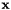
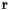

We describe a method of delayed initialization of a 3D point feature as in Visual-Inertial Odometry on Resource-Constrained Systems [14]. Specifically, given a set of measurements involving the state  and a new feature , we want to optimally and efficiently initialize the feature.
In general, we collect more than the minimum number of measurements at different times needed for initialization (i.e. delayed). For example, although in principle we need two monocular images to initialize a 3D point feature, we often collect more than two images in order to obtain better initialization. To process all collected measurements, we stack them and perform linearization around some linearization points (estimates) denoted by and  :
:
To efficiently compute the resulting augmented covariance matrix, we perform Givens rotations to zero-out rows in with indices larger than the dimension of , and apply the same Givens rotations to and . As a result of this operation, we have the following linear system:
Note that the bottom system essentially is corresponding to the nullspace projection as in the MSCKF update and is generally invertible. Note also that we assume the measurement noise is isotropic; otherwise, we should first perform whitening to make it isotropic, which would save significant computations. So, if the original measurement noise covariance and the dimension of is n, then the inferred measurement noise covariance will be and .
Now we can directly solve for the error of the new feature based on the first subsystem:
where we assumed noise and state error are zero mean. We can update with this correction by . Note that this is equivalent to a Gauss Newton step for solving the corresponding maximum likelihood estimation (MLE) formed by fixing the estimate of and optimizing over the value of , and should therefore be zero if we used such an optimization to come up with our initial estimate for the new variable.
We now can compute the covariance of the new feature as follows:
and the cross correlation can be computed as:
These entries can then be placed in the correct location for the covariance. For example when initializing a new feature to the end of the state, the augmented covariance would be:
Note that this process does not update the estimate for . However, after initialization, we can then use the second system, , , and to update our new state through a standard EKF update (see Linear Measurement Update section).